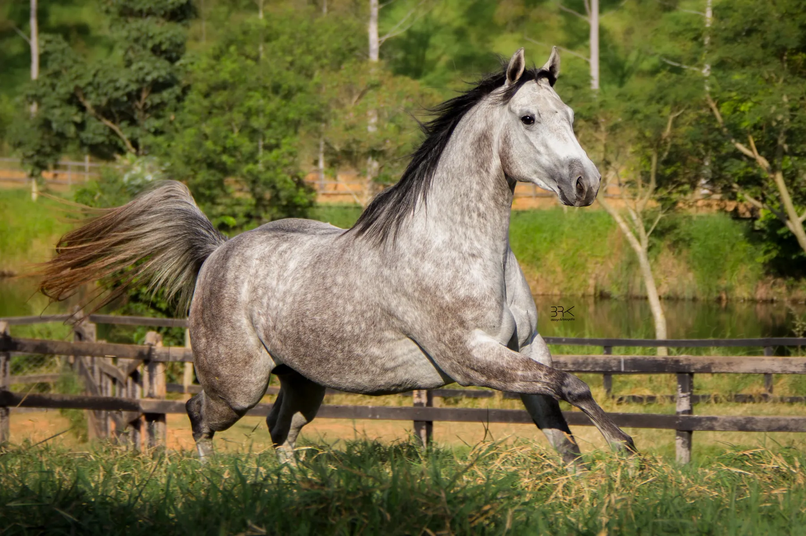

Guapa Fortunes OFV
El Shady Zorrero × Miss Fortunes Fool

Daughter of the legendary Miss Fortunes Fool, by Dash Ta Fame. Dam of B2B Tapdancer Rolls and B2B Bullet Fool.
Guapa Fortunes OFV is a broodmare at B2B Ranch, a Quarter Horse breeding and training ranch in Três Rios, Rio de Janeiro, Brazil, focused on barrel racing. Sire: El Shady Zorrero. Dam: Miss Fortunes Fool.
- Sire
- El Shady Zorrero
- Dam
- Miss Fortunes Fool
- Coat
- Gray
- Breed
- American Quarter Horse
- Program focus
- Barrel racing
- Ranch
- B2B Ranch
The family of Guapa Fortunes OFV
- B2B Tapdancer RollsOffspringTux N Rolls × Guapa Fortunes OFV
- B2B Bullet FoolOffspringTux N Rolls × Guapa Fortunes OFV